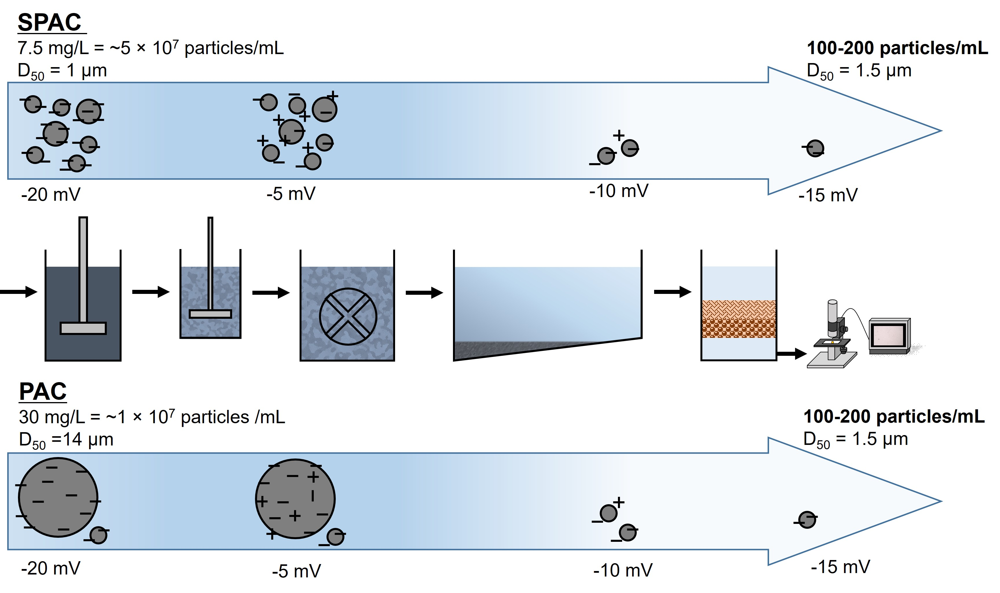

My research aims to understand the mechanisms underlying drinking water treatment processes and to use that understanding to develop more effective treatment strategies.
I study the adsorption, breakthrough, and release of PFAS in granular activated carbon (GAC), with particular interest in how adsorption history, water chemistry, and interactions with dissolved organic matter affect treatment performance.
I use mechanistic models such as the pore-surface diffusion model (PSDM) to interpret adsorption kinetics and breakthrough behavior and to connect laboratory-scale experiments with full-scale treatment processes.
My research has investigated the behavior and removal of fine particles in conventional drinking water treatment processes, with particular attention to coagulation, sedimentation, and rapid sand filtration.
Early studies focused on superfine powdered activated carbon (SPAC), including methods to identify and quantify residual carbon particles after treatment and approaches to minimize their passage through treatment processes by optimizing coagulation conditions and coagulants.
This work was later extended to examine how fine particles can remain in treated water as stray particles and to compare the removal behavior of different particle types, including microplastics, viruses, activated carbon, and clay particles.

Graphical abstract from: Nakazawa, Y. et al., Water Research, 138, 160–168, 2018. DOI